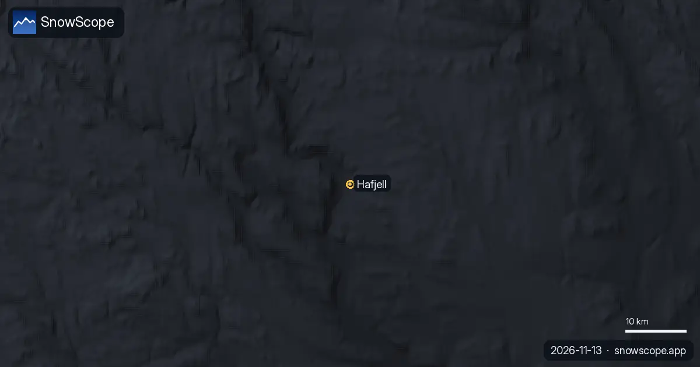
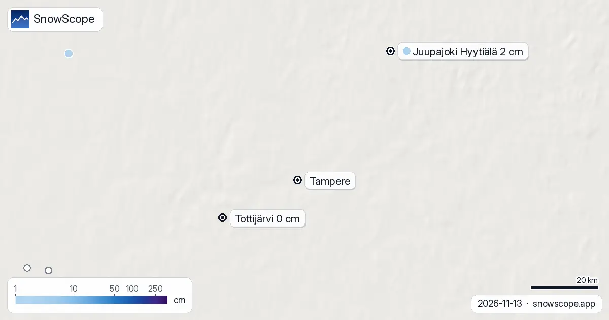
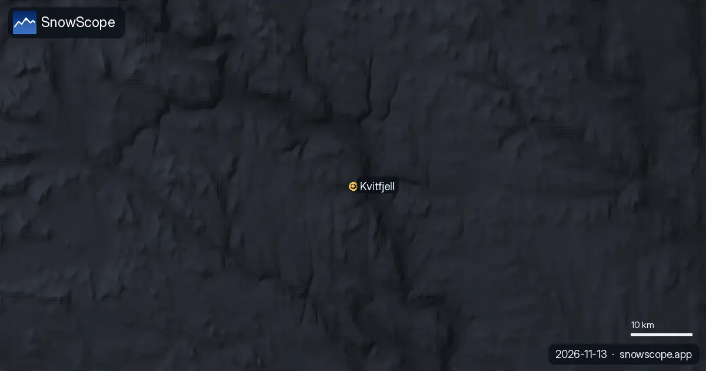

Snørapporter · Guider
Daglige snørapporter for skiløpere: hvor snøen ligger, hva som kommer og hvor du kan kjøre, fra SnowScopes snøkart og målestasjoner. Hvert tall kommer fra dagens data.

Snørapport for Riksgränsen og Björkliden i midten av november 2026: Katterjåkk målte 9 cm og Abisko 2 cm 13. november, uka som kommer, hvorfor heisene først åpner i februar, og 46 vintrer.

Snørapport for Hafjell i midten av november 2026: rundt 2 cm nær toppen og ingenting i bunnen ifølge Norges nasjonale snøkart, 9 cm ventet på toppen denne uka med regn lenger ned, og 46 vintrer.

Den 13. november 2026 målte værstasjonene i Stockholm og Helsingfors 0 cm snø, mens Sälen hadde 45 cm og Umeå 20 cm. Høyde, havet, byen og uværets bane forklarer det, med tall fra 46 vintrer.

Snødybde i Pyhä-Luosto i midten av november 2026: værstasjonene rundt fjellene målte 0 til 9 cm 13. november, under normalen; rundt 23 cm er ventet denne uka uten regn. Åpningsplaner og 46 vintrer.

Snøforhold i Vemdalen i midten av november 2026: værstasjoner rundt Vemdalsskalet og Björnrike målte 6 til 12 cm 13. november, rundt 8 cm til denne uka, åpningsplaner og 46 vintrer.

Snøprognose for Voss i midten av november 2026: rundt 20 cm på 1 348 m og nesten ingenting i sentrum ifølge Norges nasjonale snøkart; vår prognose gir rundt 35 cm på toppen, regn under 600 m.

Praktisk guide til hundekjøring rundt Tromsø vinteren 2026-27: huskygårdene reiselivsselskapet lister opp, når snøsesongen starter, hva en tur koster, mørketida og regler for egen hund.

Snødybde i Kläppen i midten av november 2026: værstasjonen i Sälen, 13 km unna, målte 45 cm 13. november etter 11 cm dagen før; skisenteret melder 25 cm. Fare for regn, åpning 11. desember, 46 vintrer.

Hundeeiere i Bergen, helgen 14. november 2026: bar bakke på Florida fredag, 5 cm bare oppe på Kvamskogen og en svært våt søndag. Bergens båndtvang hele året, de fire hundeluftegårdene og turveiene på Fløyen.

Bergen 13. november 2026: bar bakke på Florida-stasjonen i byen, 5 cm på Kvamskogen på 455 moh., 10 cm på Mjølfjell. Snø i byen midt i november er sjelden, og helgen gir regn, opptil rundt 40 mm søndag.

Toppfinneren i SnowScope er en gratis app som viser navn på fjell: pek mobilen mot fjellene, så får du navn, høyde, avstand og tid til toppen. Testene våre: 98 % av toppene den viser er virkelig i sikte, og på ekte bilder rettet den kompassfeil på opptil 105° ned til 0,15°. Gratis med 3 navn, alle topper for 13 kr én gang.


Luleå 13. november 2026: stasjonen på Kallax flyplass sendte ingen snødybde i dag, men stasjonene rundt byen målte 3 til 7 cm, alt nytt siden torsdag, og mer snø faller fredag.

Hundeeiere i Oslo, 13. november 2026: 4 cm snø på Blindern, 31 cm på Bjørnholt og 37 cm på Tryvannshøgda. Hvor hunden kan løpe løs, hva båndtvangsreglene sier i november, og en kald, tørr lørdag.

Målt snø i Oulu 13. november 2026: 7 cm i Kaukovainio, 5 cm på Hailuoto, 8 cm i Ruukki, alt nytt siden torsdag. Litt mer på vei før mildværet mandag.

Målt snø i Rovaniemi 13. november 2026: 7 cm på flyplassen, 8 cm i Apukka. Nær, men litt under, en vanlig midten av november, med en kald og snørik helg på vei.

Hundeeiere i Stockholm, 13. november 2026: 0 cm snø målt i byen, nærmeste 2 cm ligger 75 km nord. Hvor hunden kan løpe løs i Stockholm, reglene i naturreservatene og en tørr helgeprognose.


Tammerfors 13. november 2026: 0 cm i Tottijärvi og på stasjonene rundt byen, 2 cm i Hyytiälä mot nordøst. I halvparten av vintrene var Tammerfors hvit innen 10. november. Et spor av våt snø lørdag.

Målt snø i Tromsø 13. november 2026: 6 cm på byens stasjon på øya, 44 cm på 710 moh. i Lyngen, 3 cm på Bardufoss. Nær det normale for datoen, og en svært kald helg i vente.


Trondheim 13. november 2026: ingen snødybde meldt i byen, bar bakke på Ørland, 5 cm i Meråker, 18 cm i Tågdalen, 11 cm på Røros. Hva som er normalt midt i november, og en mild, våt helg.

Målt snødybde i Finland 13. november 2026: 58 av 161 stasjoner hvite, nesten alle nord for 64. breddegrad, den dypeste bare 13 cm i Kilpisjärvi. Sør, også Helsingfors og Tammerfors, er bart.

Snøforhold i Ylläs i midten av november 2026: værstasjonene rundt Ylläs målte 0 til 2 cm 13. november, langt under normalen; rundt 23 cm snø ventet uten regn, og bakkene skal åpne 21. november.

Snøforhold i Kvitfjell i midten av november 2026: rundt 5 cm i de øvre bakkene og 3 cm i bunnen ifølge Norges nasjonale snøkart, rundt 10 cm ventet høyt oppe denne uka, og 46 vintrer.

Målt snø rundt Östersund 13. november 2026: 19 cm på Norderön, 24 cm i Marby, 33 cm i Rissna. Tre til fire ganger vanlig snødybde for datoen, med en kald og tørr helg foran seg.

Målt snødybde i Norge 13. november 2026: 37 cm på Tryvannshøgda over Oslo, 44 cm i Lyngen i Troms, 10 til 18 cm i innlandsdalene, bar bakke i Bergen, Trondheim og indre Finnmark.

Snødybde i Helsingfors 13. november 2026: 0 cm i Kaisaniemi, Kumpula, Tapiola, Helsinki-Vantaa og Nuuksio. Den vanlige datoen for første snø, og en helgeprognose som holder byen grå.

Umeå målte 20 cm snø 13. november 2026, fra bar bakke onsdag. Slik ser det ut på stasjonene rundt byen, hvorfor det er tidlig, og om snøen tåler regnet mandag.

Snødybde i Kiruna 13. november 2026: 0 cm på stasjonen i byen, i Jukkasjärvi og på Esrange. I snøhistorikken vår over 46 vintre hadde byen alltid snø på denne datoen. Dette gir helgen.

Målt snødybde i Sverige 13. november 2026: 133 av 322 stasjoner hvite, et belte fra Dalarna til Västerbotten med opptil 45 cm, et bart sør og et nesten bart nord rundt Kiruna.

Snødybde i Stockholm 13. november 2026: 0 cm på Observatoriekullen og ved alle stasjoner rundt byen. Når snøen pleier å komme, og hvorfor helgen ikke gir noe.

Målt snødybde i Oslo 13. november 2026: 4 cm på Blindern, 31 cm på Bjørnholt og 37 cm på Tryvannshøgda. Slik ser en vanlig midten av november ut, og dette gjør helgen med snøen.

Målt snø på bakken 13. november 2026 i Oslo, Bergen, Trondheim, Tromsø, Stockholm, Göteborg, Östersund, Umeå, Luleå, Kiruna, Helsingfors, Tammerfors, Oulu og Rovaniemi: fra 20 cm i Umeå til bar bakke i Kiruna.